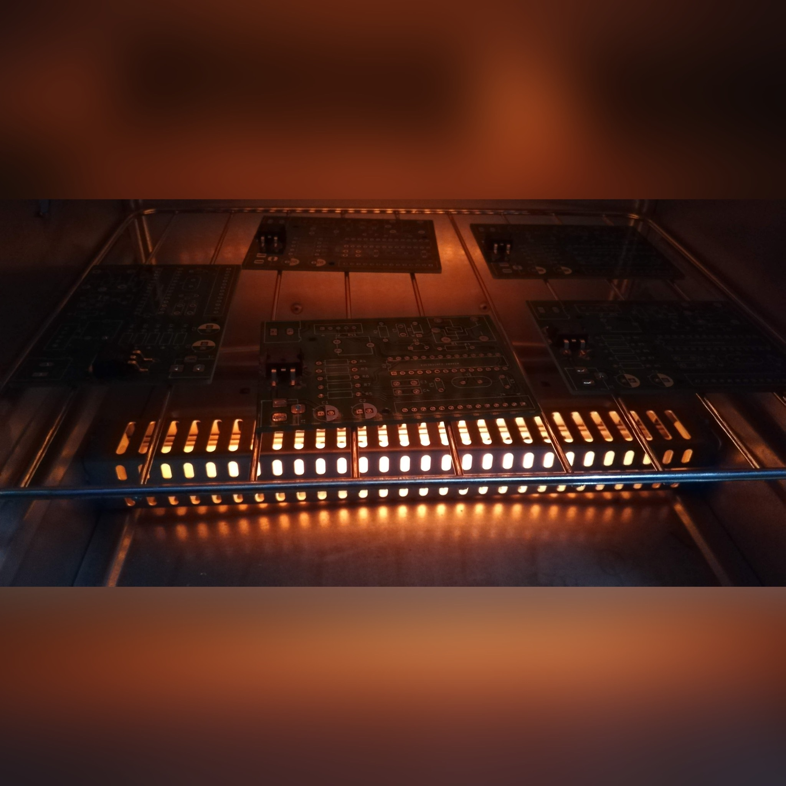

Projects

Quadruped Robot
- Built Inverse Kinematics calculator, Gait planner, State Estimator for the robot.
- Built a simulator on Pybullet.
- Designed and 3d printed the robot and successfully tested out the Software.
Inverse Kinematics Engine
- User input is given in cartesian coordinates. The Software provides corresponding angle values for the number of links and their lengths.
- Animated output with Live User interface.
- Built this first for the Quadruped Robot.

Autonomous Ground Vehicle
- Built a three-wheeled Robot that navigates through the shopfloor using pre-fed location matrix and Odometry data.
- A centralized server reads sensor data and environment and controls robot parameters.
Energy Management System
- Designed and developed hardware that measures power and continuously logs value to a cloud database.
- This system further comes with Relays that could be used to control loads as dictated by control Methods.
- The data from this device can be used to analyze power usage trends and optimize energy usage.

Reflow Oven
- Converted a Toaster Oven into a Reflow oven to solder SMD components in Printed Circuit Boards.
- Used Microcontroller and Closed-loop PID control to trace reflow graphs.
- Used LVGL for GUI with an LCD to change Temperatures and Preset parameters.

Weather Monitoring System
- ESP32 S2 based Weather Monitoring System.
- Measures Temperature, Pressure, Humidity, CO, CO2, PM2.5 Dust.
- Also has GPS, Accelerometer, Gyroscope to enable battery powered remote operation.